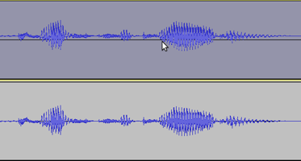
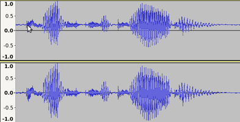
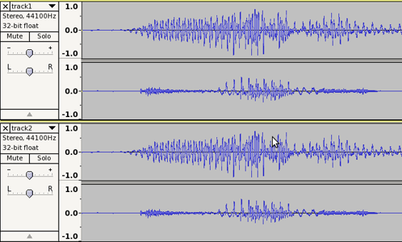
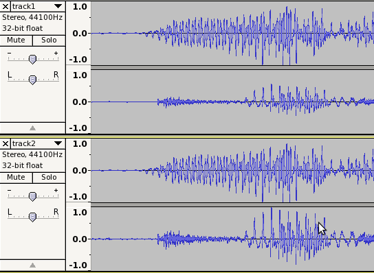

Amplify and Normalize
From Audacity Manual
Contents |
Applying level changes
The Normalize effect offers the option to "Normalize maximum amplitude to" a chosen level.
The Amplify effect offers two interdependent options (meaning that changing one changes the other): "Amplification (dB)", and "New Peak Amplitude (dB)". The slider can also be used to choose the amplification level without entering any text input.
For a single mono track, these are essentially different ways of saying the same thing. If we have a track whose peak amplitude is -6 dB (+0.5 to -0.5 on the vertical scale), there are three ways to bring the peak up to 0 dB (+1.0 to -1.0 on the vertical scale).
- "Normalize the maximum amplitude" to -0.0 dB
- Set "Amplification (dB)" to 6 dB
- Set "New Peak Amplitude (dB)" to -0.0 dB
With a -6 dB track, Amplify will always default to the above "Amplification (dB)" and "New Peak Amplitude (dB)" values, because it always defaults to amplifying to 0.0 dB.
If the DC offset correction in Normalize is not applied, each of these methods will do exactly the same thing and the resulting audio will be identical.
Using Normalize with DC offset correction
If DC offset is present, you should always use DC offset correction. A minimal amount of offset is very common, but large amounts (such as in Figure 1 below) should not normally happen.
- 
- Figure 1
In Figure 1 you can see that the upper track is not centred on the horizontal line, but above it. It is "off-set". We can correct this fault by using the Normalize effect with "Remove any DC offset" selected. Using Normalize with this selected (but with "Normalize maximum amplitude to" not selected) will correct this offset without making any other changes to the amplitude - the result will look like the lower track.
- 
- Figure 2
In the upper track in Figure 2 we show the offset upper track from Figure 1 after applying Amplify. In the lower track we see that amplified waveform after applying Normalize with DC offset correction.
In both cases the maximum peak amplitude was set to 0.0 dB, but note that in the upper (amplified) track, the resulting waveform is noticeably smaller than in the lower (normalized) track. Note also that the DC offset has become worse after amplifying than it was in Figure 1 - the offset has also been amplified.
The reason that the Amplified waveform is smaller is that the positive peaks above the horizontal line have been shifted up vertically by the DC offset, so although the positive peak is at 0.0 dB (+1.0 on the vertical scale), the negative peak below the horizontal is far away from -1.0.
- Newer Windows PCs may have a DC offset cancellation feature when recording from the built-in sound inputs; see the DC offset page.
Differences between Amplify and Normalize on multiple tracks or channels
This issue has sparked off several lively debates in our community. Audacity's Normalize effect breaks with the convention of many other audio programs. In those programs, "normalize" maximizes multiple tracks against the peak level common to all of them, so retaining their relative balance.
Amplify multiple audio tracks
If you select multiple tracks and apply the Amplify effect, then all audio tracks will be amplified by the same amount.
For example, if you enter 3 dB in "Amplification (dB)", all audio tracks will be amplified by 3 dB, irrespective of their original level. Whatever peak volume differences there were between the tracks (or channels within a track) will be preserved. In particular Amplify will always preserve the left-right balance of a stereo pair within a track.
Normalize multiple audio tracks or channels
The Normalize effect can optionally operate evenly on the channels of a stereo pair (as Amplify does) thus retaining the Left-Right balance all stereo channel pairs within the selected tracks. A new checkbox has been added: "Normalize stereo channels independently" which is set by default to "off". If this checkbox is unticked then all selected audio tracks will be normalized to the same peak level. If this checkbox is ticked then all audio channels within the selected tracks will be independently normalized to the same peak level.
Visual comparison
Let us see this comparison on a stereo track. In Figure 3 below there are two stereo tracks - they each have two audio channels, Left and Right. Note that the peak amplitude of the Left (upper) channel of each stereo pair is quite a bit greater than the peak amplitude of the Right (lower) channel.
- 
- Figure 3
In Figure 4 below we can see the clear difference between the processed tracks after Amplifying the upper track to 0.0 dB, and Normalizing the lower track to 0.0 dB (with stereo channels normalized independently; you can choose to "Normalize stereo channels independently" or not.
- 
- Figure 4
Note that in the upper stereo track, both Left and Right channels have been amplified by the same amount (about 1.0 dB). Only the Left channel has a resultant peak value of 0.0 dB, because the Right channel was of lower amplitude. In the lower track, Normalize has processed each channel independently to give both channels a resultant peak value of 0.0 dB.
Advantages and Disadvantages
Advantages of Amplify
- Change the level of one or more tracks or channels by the same amount, preserving the balance between them
- Slider for quick amplification adjustment
- Automatically calculates the amplification required to set the loudest track or channel to maximum volume without clipping
- Can also be set to allow clipping
For example, to increase the level of several tracks by 2 dB, use the Amplify effect and enter "2" (without quotes) in the "Amplification (dB)" box.
Advantages of Normalize
- Correct DC offset
- Adjust multiple audio tracks or channels to the same peak level, removing any level disparity between them
- There is an option to normalize stereo channels as a pair (retaining the balance between the channels) instead of independently.
- Normalization above the clipping level of 0 dB is disallowed
For example, if you have accidentally recorded one channel quieter than the other in a stereo recording (a common scenario with LP or tape recordings), normalizing the channels independently will go a long way toward restoring a correct balance. Note because normalization is based on "peak" rather the "average" level, it does not necessarily result in processed tracks actually sounding equally loud.
When not to use Amplify
If your audio has DC offset present, you should use Normalize to correct that offset.
If you are applying a Chain and want to bring a track or files to a specific level, use Normalize instead. Amplify in a Chain will not make the track or file as loud as possible if "New Peak Amplitude (dB)" is set to 0 dB and will not set the amplitude to any other chosen amount in that box. Because Amplify is being applied automatically it can only apply the "Amplification (dB)" amount as saved in the "Ratio" parameter.
When not to use Normalize
If multiple tracks contain intentional differences in peak levels, you should never normalize any of them. The only way to preserve the relative balance between them is to select them all as a group and amplify them, so they are all scaled up by the same amount.
You *can* normalize stereo tracks without changing their channel balance, but only if a) the stereo track is not split into Left and Right and b) "Normalize stereo channels independently" is unchecked.
If tracks with intentional peak differences have DC offset that needs correction, then you can and should use Normalize, but with "Normalize maximum amplitude to" unchecked.